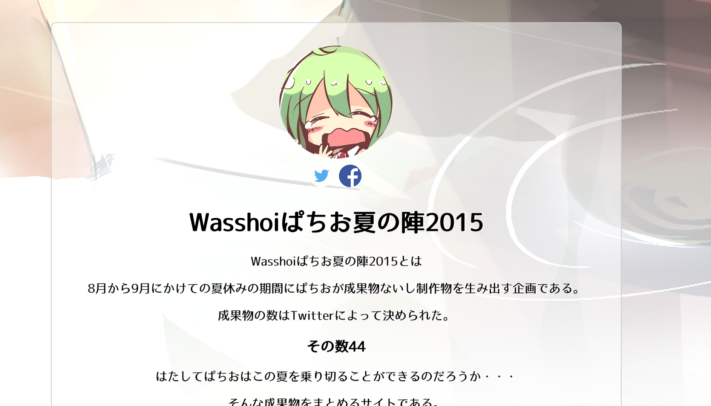

Wasshoiぱちお夏の陣2015
No.2 Wasshoiぱちお夏の陣2015
Webサイト構築
制作物をまとめたものを置いておく場所を作るという成果物(*‘∀‘)
静的なWebですらまだ少し時間かかるのでこれくらい雑なものをどんどん作っていきたいな
Knockout.jsの利用
今まで通りじゃ面白くないので昔Vueを少し触ったときに気になってた、同じくMVVMなKnockoutを使ってみることに（なんかこっちの方が人口多そうなイメージ）
トップページにある成果物の概要の部分をJSONのデータを基にバインディングしてループ回してるところに使った
早くドメインとりたみ
Facebook教えて
最近研究室でFacebookを使うようになったのでトップページにFacebookの共有ボタン作ったけど、いいね！のボタンがなぜか作れない・・・たぶんアホしてるんだろうけど夏バテで割と考えたくない
共有リンクボタンはTwitterのが作りやすいですね